대기환경산업기사 (2008-03-02 기출문제)
1과목: 대기오염개론
1. 다음 중 납 화합물의 주요 배출원으로 가장 거리가 먼 것은?
- 고무가공공장
- 디젤자동차 배출가스
- 축전지 제조공장
- 도가니 제조공장
(정답률: 알수없음)

2. 다음 중 각 대기오염물질에 대한 지표식물과 가장 거리가 먼 것은?
- SO2 - 알팔파
- 에틸렌 - 스위트피
- 불소화합물 - 글라디올러스
- H2S - 사과
(정답률: 알수없음)
3. 아래 그림에서 D 상태에 해당되는 연기의 형태는? (단, 점선은 건조단열감율선)
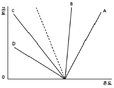
- Fumigation
- Lofting
- Fanning
- Looping
(정답률: 알수없음)
4. 대류권에서의 광화학반응에 대한 다음 설명 중 틀린 것은?
- 성층권의 오존층이 대부분의 자외선을 차단한 후 대류권으로 들어오는 태양빛의 파장은 280nm 이상의 파장이다.
- 케톤은 파장 300-700nm에서 약한 흡수를 하여, 광분해한다.
- 알데히드(RCHO)는 파장 313nm 이하에서 광분해한다.
- SO2는 파장 450-700nm에서 강한 흡수가 일어나 대류권에서 광분해한다.
(정답률: 70%)
5. 지구온난화 원인으로 주목되는 온실효과를 유발하는 물질과 가장 거리가 먼것은?
- 아산화질소(N2O)
- 암모니아(NH3)
- 이산화탄소(CO2)
- 메탄(CH4)
(정답률: 알수없음)
6. 대기중에서 최고농도가 나타나는 시간이 가장 이른 것은? (단, 하루 중 일변화)
- O3
- NO2
- NO
- PAN
(정답률: 알수없음)
7. 다음 용어 설명 중 가장 거리가 먼 것은?
- 대류권: 지표면에서 평균 11km 까지로 구름, 비 등의 기상현상이 발생
- down wash: 바람이 불어오는 쪽의 반대로 부압 영역이 생겨 연기가 말려 들어가는 현상
- 열섬효과: 교외지역에 비해 도시지역에 고온의 공기층을 형성하는 현상
- 복사역전: 시간에 무관하게 장기간으로 지속되어 지표에서 발생한 오염물질의 수직확산을 방해
(정답률: 알수없음)
8. 지상 44m에서 풍속이 7.5m/s 일 때, 지상 11m 높이에서의 풍속은 얼마인가? (단, Deacon 식 적용, 풍속지수 p는 0.25)
- 5.3m/s
- 5.7m/s
- 6.2m/s
- 6.9m/s
(정답률: 알수없음)
9. SO2가 유효고 100m 인 굴뚝으로부터 150g/s의 속도로 배출되고 있다. 굴뚝 높이에서의 풍속은 5m/s이고, 대기의 안정도는 D 이다. 이 때 굴뚝으로부터 1000m 거리에서의 지표중심선상의 농도(ppb)는? (단, 안정도 D 일 때 1000m 지점의 δy = 68m, δz = 32m, 농도계산은
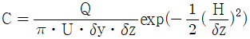
이용하며, 표준상태로 가정)- 64.5 ppb
- 33.2 ppb
- 11.6 ppb
- 5.6 ppb
(정답률: 알수없음)
10. A사에서 신차 제작 발표회를 가졌다. 신차에서 배출되는 CO 농도가 0.0335%(V/V)이면 몇 mg/m3인가? (단, 표준상태 기준)
- 약 320
- 약 420
- 약 560
- 약 650
(정답률: 알수없음)
11. 체적이 100m3인 복사실의 공간에서 오존(O3)의 배출량이 분당 0.2mg인 복사기를 연속 사용하고 있다. 복사기 사용전의 실내 오존의 농도가 0.13ppm라고 할 때, 5시간 사용 후 복사실의 오존농도(ppb)는? (단, 0℃, 1기압 기준, 환기 없음)
- 260 ppb
- 380 ppb
- 410 ppb
- 520 ppb
(정답률: 알수없음)
12. 엔진작동상태에 따른 전형적인 자동차 배기가스 조성 중 감속시에 가장 큰 농도 증가를 나타내는 물질은? (단, 정상운행 조건대비)
- NO2
- H2O
- CO2
- HC
(정답률: 알수없음)
13. 다음 그림에서 “가” 쪽으로 보는 바람은?
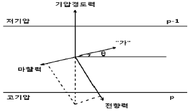
- 경도풍
- 지상풍
- 지균풍
- 국지풍
(정답률: 알수없음)
14. 연기의 배출속도 50m/s, 평균풍속 300m/min, 유효굴뚝높이 55m, 실제굴뚝높이 24m 인 경우 굴뚝의 직경(m)은? (단, ΔH = 1.5× (Vs/U)×D 식 적용)
- 0.3
- 1.6
- 2.1
- 3.7
(정답률: 알수없음)
15. 다음 중 탄화수소류에 관한 설명으로 틀린 것은?
- 탄화수소류 중 2중결합을 가진 올레핀계 화합물은 방향족 탄화수소보다 보통 대기 중에서의 반응성이 크다.
- 불포화탄화수소는 2중결합 또는 3중결합을 갖고 있으며 반응성이 높아 광화학반응을 일으킨다.
- 대기환경 중 탄화수소는 기체, 액체 및 고체로 존재하는데, 탄소수가 5개 이상인 것은 액체 또는 고체로 존재한다.
- 방향족탄화수소는 대기중에서 기체로 존재하며, 메탄계 탄화수소의 지구배경농도는 약 1.5ppb 이다.
(정답률: 70%)
16. 대기의 연직구조에 대한 설명으로 거리가 먼 것은?
- 대류권은 보통 저위도 지방이 고위도 지방에 바히여 높다.
- 대류권은 지표에서부터 약 11km 까지의 높이로서 구름이 끼고 비가 오는 등의 기상현상은 대류권에 국한되어 나타난다.
- 기상요소의 수평분포는 위도, 해륙분포 등에 의하며 지역에 따라 다르게 나타나지만 연직방향에 따른 변화가 더욱 크다.
- 성층권의 고도는 약 11km에서 50km 까지이고, 이 권역에서는 고도에 따라 온도가 증가하고, 하층부의 밀도가 작아서 불안정한 상태를 나타낸다.
(정답률: 알수없음)
17. 굴뚝의 현재 유효고가 55m 일 때, 최대 지표농도를 절반으로 감소시키기 위해서는 유효고도(m)를 얼마만큼 더 증가시켜야 하는가? (단, Sutton 식을 적용하고, 기타 조건은 동일하다고 가정)
- 77.8m
- 32.0m
- 22.8m
- 11.4m
(정답률: 알수없음)
18. 자동차 배출가스가 발생되는 가솔린 기관의 작동 원리 중 4행정사이클의 기본동작에 해당되지 않는 것은?
- 흡입행정
- 압축행정
- 폭발행정
- 누출행정
(정답률: 알수없음)
19. 1984년 인도의 보팔시에서 발생한 대기오염사건의 주원인 물질은?
- 황화수소
- 황산화물
- 멜캡탄
- 메틸이소시아네이트
(정답률: 알수없음)
20. 다음 ( )안에 알맞은 것은?
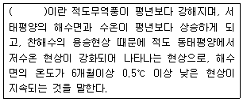
- 엘니뇨현상
- 사헬 현상
- 라니냐 현상
- 헤들리셀 현상
(정답률: 알수없음)
2과목: 대기오염 공정시험 기준(방법)
21. 다음 조건을 이용한 가스크로마토그래프법에서 분리관의 HETP는?
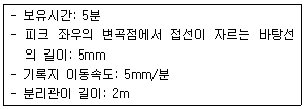
- 1.25mm
- 2.5mm
- 5.0mm
- 6.5mm
(정답률: 알수없음)
22. 다음 자외선 가시선 분광법(흡광광도법)에 속하는 각 장치에 사용되는 구성요소의 연결로 옳지 않은 것은?
- 광원부 - 텅스텐램프, 중수소방전관
- 파장선택부 - 단색화장치, 필터
- 측광부 - 광전도셀, 증폭기
- 시료부 - 셀홀더, 대수변환기
(정답률: 알수없음)
23. 굴뚝에서 배출되는 먼지 측정방법 중 굴뚝단면이 사각형인 경우 측정점 산정기준에 관한 설명으로 옳지 않은 것은?
- 측정단면은 한변의 길이가 1m 이하인 범위에서 4개이상의 등단면적의 직사방형 또는 정사방형으로 나누어 중심에 측정점을 선정한다.
- 굴뚝단면적이 1m2 이하인 경우 구분된 1변의 길이는 0.5m 이하로 한다.
- 굴뚝단면적이 4m2 초과 20m2 이하인 경우 구분된 1변의 길이는 1m 이하로 한다.
- 굴뚝의 단면적이 20m2을 초과하는 경우는 측정점수는 10점까지로 하고, 등단면적으로 구분한다.
(정답률: 알수없음)
24. 굴뚝을 통하여 대기중으로 배출되는 가스상 물질의 시료채취방법 중 채취부에 관한 기준으로 옳은 것은?
- 수은 마노미터는 대기와 압력차가 50mmHg 이상인 것을 쓴다.
- 펌프보호를 위해 실리콘 재질의 가스건조탑을 쓰며, 건조재는 주로 활성알루미나를 쓴다.
- 펌프는 배기능력 10-20L/분 인 개방형인 것을 쓴다.
- 가스미터는 일회전 1L의 습식 또는 건식 가스미터로 온도계와 압력계가 붙어 있는 것을 쓴다.
(정답률: 알수없음)
25. 배출가스 중 금속화합물을 유도결합플라스마 원자발광분광법(Inductively Coupled plasma-Atomin Emission Spectrometry)으로 분석하기 위한 시료 성상에 따른 전처리 방법으로 가장 거리가 먼 것은?
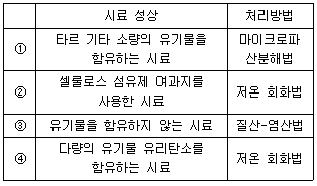
- ①
- ②
- ③
- ④
(정답률: 알수없음)
26. 가스 및 입자상의 다이옥신 및 퓨란류 시료채취방법으로 옳지 않은 것은?
- 시료채취전에 반드시 채취장비의 누출시험을 실시하여야 하며, 여과지홀더 및 흡착관은 알루미늄호일 등으로 미리 차광시켜 둔다.
- 측정공에서 흡인노즐의 방향을 배출가스의 흐름과 역방향으로 해서 측정점까지 삽입한다.
- 흡인노즐에서 흡인하는 가스의 유속은 측정점의 배출가스 유속에 대해 상대오차 -10 - +10%의 범위내로 하며, 지속적으로 흡인유량을 조사해서 등속흡인이 되도록 조절한다.
- 배출가스 온도가 500℃ 이상으로 높을 경우는 냉각장치를 사용하여 먼지포집부 온도를 120℃ 이하로 유지하여야 한다.
(정답률: 알수없음)
27. A 굴뚝내 배출가스의 유속을 피토우관으로 측정한 결과 동압이 25mmH2O 였고, 온도가 211℃였다면 이 굴뚝 내 배출가스의 유속은? (단, 배출가스의 표준상태에서의 밀도: 1.3kg/m3, 피토우관 계수: 0.98, 기타 조건은 같다고 가정함.)
- 18.6m/s
- 20.4m/s
- 22.8m/s
- 25.3m/s
(정답률: 40%)
28. 굴뚝 배출가스 중 시안화수소를 피리딘 피라졸론법에 의해 분석할 때 다음중 방해성분으로 가장 적합한 것은?
- 철 및 동
- 할로겐 및 황화수소
- 알루미늄 및 철
- 인산염 및 황산염
(정답률: 알수없음)
29. 전기 아크로를 사용하는 철강공장에서 일정한 굴뚝을 거치지 않고 외부로 배출되는 입자상 물질의 측정방법 중 부투명도법에 관한 측정기준으로 가장 거리가 먼 것은?
- 전기 아크로를 사용하는 철강공장에서 입자상 물질이 건물로부터 제일 많이 새어나오는 곳을 대상으로 하여 측정한다.
- 측정시 태양은 측정자의 좌측 또는 우측에 있어야 하고 측정자는 건물로부터 배출가스를 분명하게 관측할 수 있는 거리에 위치해야 하지만, 그 거리는 아무리 멀어도 200m를 넘지 않아야 한다.
- 전기 아크로의 출강에서 다음 출강 개시전까지 매연 측정기를 이용하여 30초 간격으로 비탁도를 측정하낟.
- 측정한 비탁도는 최소 0.5도 단위로 측정값을 기록하며 비탁도에 20%를 곱한 값을 불투명도 값으로 한다.
(정답률: 알수없음)
30. 연도 배출가스 중 오염물질의 연속 측정에 사용하는 비분산 정필터형 적외선 가스 분석계의 구성에 관한 설명으로 옳지 않은 것은?
- 광원은 원칙적으로 니크롬선 또는 탄화규소의 저항체에 전류를 흘려 가열한 것을 사용한다.
- 회전섹터는 시료가스 중에 포함되어 있는 간섭성분가스의 흡수파장역의 적외선을 흡수제거하기 위하여 사용한다.
- 광학필터에는 가스필터와 고체필터가 있으며, 단독 또는 적절히 조합하여 사용한다.
- 비교셀은 아르곤과 같은 불활성 기체를 봉입하여 사용한다.
(정답률: 알수없음)
31. 다음은 굴뚝배출가스 내의 질소산화물 분석방법 중 아연환원 나프틸에틸렌디아민법에 관한 설명이다. ( )안에 알맞은 것은?
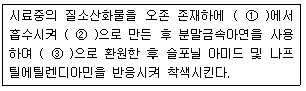
- ① NaOH 용액, ② 질산이온, ③ 아질산이온
- ① 물, ② 질산이온, ③ 아질산이온
- ① NaOH 용액, ② 아질산이온, ③ 질산이온
- ① H2SO4 용액, ② 아질산이온, ③ 질산이온
(정답률: 알수없음)
32. 환경대기 중 질소산화물 측정방법에서 수동측정방법인 것은?
- 야콥스호흐하이져( Jacobs - Hochheiser)법
- 화학발광법(Chemiluminescent method)
- 살츠만(Saltzman)법
- 흡광차분광법(DOAS)
(정답률: 알수없음)
33. 굴뚝 배출가스 중 황화수소의 메틸렌 블루우 분석방법에서 흡수액 제조시 사용되는 시약이 아닌 것은?
- 수산화나트륨
- 황산아연
- 수산화칼륨
- 황산암마늄
(정답률: 알수없음)
34. 환경대기내의 옥시던트(오존으로서) 농도를 측정하기 위한 시험방법 중 중성요오드화칼륨법(수동)에 관한 기준이다. ( )안에 알맞은 것은?
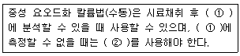
- ① 1시간이내, ② 산성요오드화칼륨법
- ① 24시간이내, ② 산성요오드화칼륨법
- ① 1시간이내, ② 알카리성요오드화칼륨법
- ① 24시간이내, ② 알카리성요오드화칼륨법
(정답률: 알수없음)
35. 다음은 이온크로마토그래프법 중 써프렛서에 관한 설명이다. ( )안에 알맞은 것은?
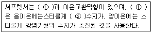
- ① 덤벨형, ② 강산형
- ① 덤벨형, ② 약산형
- ① 관형, ② 강산형
- ① 관형, ② 약산형
(정답률: 알수없음)
36. 굴뚝반경이 2.2m인 원형 굴뚝에서 먼지를 채취하고자 할 때의 측정점수는?
- 8
- 12
- 16
- 20
(정답률: 알수없음)
37. 배출가스 중 금속화합물을 원자흡수분광광도법(원자흡광광도법)에 의해 측정하고자 할 때, 사용되는 용어의 정의로 옳지 않은 것은?
- 감도: 각 원소 성분에 대해 입사광의 1%(0.0044 흡광도)를 흡수할 수있는 시료의 농도를 의미한다.
- 표준원액: 정확한 농도를 알고 있는 비교적 고농도의 용액으로, 일반적으로 1000mg/kg 농도에서 0.5%이내의 불확도를 나타내야 한다.
- 매질효과: 시료 용액의 정도, 표면장력, 휘발성 등과 같은 물리적 특성이나 화학적 조성의 차이에 의해 원자화율이 달라지면서 정량성이 저하되는 효과를 의미한다.
- 원자흡수: 바닥상태의 원자가 높은 전자에너지 준위를 갖는 들뜬상태로 될 때 소요되는 전자기복사선의 흡수를 의미한다.
(정답률: 알수없음)
38. 가스크로마토그래프의 각 장치에 관한 설명 중 옳지 않은 것은?
- 분리관오븐의 온도조절 정밀도는 ±0.5℃ 범위이내(오븐의 온도가 150℃부근일 때)이어야 한다.
- 방사성 동위원소를 사용하는 검출기를 수용하는 검출기 오븐에 대하여는 온도조절기구와는 별도로 독립작용할 수 있는 과열방지기구를 설치해야한다.
- 가스를 연소시키는 검출기를 수용하는 검출기 오븐은 그 가스가 오븐내에 오래체류하지 않도록 된 구조이어야 한다.
- 가스 시료도입부는 가스계량관(통상 0.5-5㎕) 및 가스성분 분석부와 유로변환기구로 구성된다.
(정답률: 알수없음)
39. 일정한 굴뚝을 거치지 않고 외부로 비산되는 먼지를 하이볼륨에어샘플러법으로 측정할 때의 시료채취기준에 관한 설명으로 가장 거리가 먼 것은?
- 발생원의 비산먼지 농도가 가장 높을 것으로 예상되는 지점 3개소 이상을 측정점으로 선정한다.
- 시료채취 위치는 부근에 장애물이 없고 바람에 의하여 지상의 흙모래가 날리지 않아야 한다.
- 풍속이 0.5m/초 미만으로 바람이 거의 없을 때는 원칙적으로 시료채취를 하지 않는다.
- 시료채취는 1회 2시간 이상 연속 채취하며, 풍하방향에 대상 발생원의 영향이 없을 것으로 예측되는 곳에 대조위치를 선정한다.
(정답률: 알수없음)
40. 환경대기 중 먼지 측정방법에서 로우볼륨에어 샘플러법에 관한 설명으로 가장 거리가 먼 것은?
- 부자식 면적유량계에 새겨진 눈금은 20℃ 1기압에서 10-30L/분 범위를 0.5L/분까지 측정할 수 있도록 되어있는 것을 사용한다.
- 흡인펌프는 연속해서 10일 이상 사용할 수 있고, 진공도가 낮은 것을 사용한다.
- 여과지 홀더의 팩킹은 불소수지로 만들어진 것을 사용한다.
- 멤브레인필터와 같이 압력손실이 큰 여과지를 사용하는 진공계는 유량의 눈금값에 대한 보정이 필요하기 때문에 압력계를 부착한다.
(정답률: 알수없음)
3과목: 대기오염방지기술
41. 세정 집진장치의 입자포집 원리에 관한 다음 설명 중 옳지 않은 것은?
- 미립자 확산에 의하여 액적과의 접촉을 쉽게 한다.
- 배기의 습도 감소에 의하여 입자가 서로 응집한다.
- 입자를 핵으로 한 증기의 응결에 따라 응집성을 촉진시킨다.
- 액적에 입자가 충돌하여 부착한다.
(정답률: 알수없음)
42. 어떤 유해가스와 물이 일정온도에서 평형상태에 있을 때, 헨리상수(atmㆍm3/kmol)는? (단, 기상의 유해가스 분압이 1⑤5mmH2O 일 때 수중유해가스의 농도가 2.9kmol/m3 이며, 전압은 1atm)
- 0.012
- 0.025
- 0.035
- 0.043
(정답률: 알수없음)
43. 흡수장치에 관한 설명으로 가장 거리가 먼 것은?
- 분무탑의 경우 가스의 압력손실은 적은 반면, 세정액분무를 위해서는 상당한 동력이 필요하다.
- 가스측 저항이 큰 경우는 가스분산형 흡수장치를 쓰는 것이 유리하다.
- 가스분산형 흡수장치로는 포종탑, 다공판탑 등이 있다.
- 충전탑의 경우 편류현상을 최소화 하기 위해서는 보통 탑의 직경(D)과 충전재 직경(d)의 비가 D/d 가 8-10일 때 이다.
(정답률: 알수없음)
44. 비중 0.9, 황성분 1.6%인 중유를 1400L/h로 연소시키는 보일러에서 황산화물의 시간당 발생량은? (단, 표준상태 기준, 황성분은 전량 SO2으로 전환된다.)
- 14Sm3/h
- 21Sm3/h
- 27Sm3/h
- 32Sm3/h
(정답률: 알수없음)
45. 다음 중 흡수장치에 대한 설명으로 틀린 것은?
- 충전탑은 포말성 흡수액에도 적응성이 좋으나 충전층의 공극이 폐쇄되기 쉬우며, 희석열이 심한 곳에는 부적합하다.
- 분무탑은 가스의 흐름이 균일하지 못하고, 분무액과 가스의 접촉이 균일하지 못하여 효율이 낮은 편이다.
- 벤츄리 스크러버는 압력손실이 높으며, 소형으로 대용량의 가스처리가 가능하고, mist의 발생이 적고, 흡수효율도 낮은 편이다.
- 제트 스크러버는 가스의 저항이 적고, 수량이 많아 동력비가 많이 소요되며, 처리가스량이 많을 때에는 효과가 낮은 편이다.
(정답률: 알수없음)
46. 배출가스 흡착과정에서 파과점(Break point)을 가장 잘 설명한 것은?
- 주어진 온도와 압력 조건에서 흡착제가 가장 많은 양의 흡착질을 흡착하는 점
- 흡착탑 출구에서 오염물질 농도가 급격히 증가되기 시작하는 점.
- 처리가스 중 오염물질이 최대가 되는 점.
- 흡착탑 출구에서 오염물질 농도가 급격히 감소되기 시작하는 점.
(정답률: 알수없음)
47. 전기 집진장치의 유지관리 사항 중 가장 거리가 먼 것은?
- 조습용 Spray 노즐은 운전중 막히기 쉽기 때문에 운전중에도 점검, 교환이 가능해야 한다.
- 운전 중 2차 전류가 매우 적을 때에는 조습용 Spray의 수량을 증가시켜 겉보기 저항을 낮춘다.
- 시동시 애자 등의 표면을 깨끗이 닦아 고전압회로의 절연저항이 100Ω 이하가 되도록 한다.
- 접지저항은 적어도 년 1회 이상 점검하여 10Ω 이하가 되도록 유지한다.
(정답률: 알수없음)
48. 입경측정방법 중 간접측정방법이 아닌 것은?
- 표준체측정법
- 관성충돌법
- 액상침강법
- 광산란법
(정답률: 알수없음)
49. 황성분이 2.4%인 중유를 2000kg/h 연소하는 보일러 배기가스를 NaOH 용액으로 처리할 때, 시간당 필요한 NaOH의 양(kg/h)은? (단, 탈황율은 95%)
- 72kg/h
- 92kg/h
- 114kg/h
- 139kg/h
(정답률: 알수없음)
50. 표준상태에서 메탄 6Sm3를 완전연소시 요구되는 이론산소의 무게는?
- 약 11kg
- 약 13kg
- 약 15kg
- 약 17kg
(정답률: 알수없음)
51. 수소가스 5Sm3의 이론 연소공기량(Sm3)은?
- 약 32
- 약 24
- 약 12
- 약 8
(정답률: 알수없음)
52. 액화프로판 660kg을 기화시켜 8Sm3/h로 연소시킨다면 몇 시간 사용할 수 있는가? (단, 표준상태 기준)
- 34시간
- 42시간
- 46시간
- 49시간
(정답률: 알수없음)
53. 세정집진장치에서 관성충돌계수를 크게 하는 조건이 아닌 것은?
- 액적의 직경이 커야 한다.
- 먼지의 밀도가 커야 한다.
- 처리가스와 액적의 상대속도가 커야 한다.
- 먼지의 입경이 커야 한다.
(정답률: 알수없음)
54. 석탄연소 후 배출가스의 성분분석 결과가 CO2=15%, O2=5%, N2=80% 일때, CO2max(%)는?
- 약 15%
- 약 20%
- 약 25%
- 약 30%
(정답률: 알수없음)
55. 직경이 40cm, 유효높이 11.9m의 원통형 백필터를 사용하여 먼지를 20m3/s로 집진하고자 한다. 이 때 여과속도를 0.01m/s로 할 경우 백필터의 소요수는?
- 126개
- 134개
- 146개
- 158개
(정답률: 알수없음)
56. 액화천연가스(LNG)와 액화석유가스(LPG)에 관한 설명으로 가장 거리가 먼것은?
- LNG는 천연가스를 1기압하에서 -162℃ 정도로 냉각하여 액화시킨 연료이다.
- LPG의 주성분은 메탄과 프로판이다.
- 발열량은 LNG보다 LPG가 높다.
- LPG의 대부분은 석유정제시 부산물로 얻어진다.
(정답률: 80%)
57. 입자의 직경이 10㎛인 구형입자의 밀도가 1200kg/m3이라면 이 입자의 단위질량당의 표면적(m2/kg)은?
- 500 m2/kg
- 1000 m2/kg
- 2500 m2/kg
- 5000 m2/kg
(정답률: 알수없음)
58. 후드 개구의 바깥주변에 플랜지(Flange) 부착시 발생하는 현상과 가장 거리가 먼 것은?
- 포착속도가 커진다.
- 동일한 오염물질 제거에 있어 압력손실은 감소한다.
- 후드 뒤쪽의 공기 흡입을 방지할수 있다.
- 동일한 오염물질 제거에 있어 송풍량은 증가한다.
(정답률: 알수없음)
59. 총집진효율 90%를 요구하는 A 공장에서 50% 효율을 가진 1차 집진장치를 이미 설치하였다. 이 때 2차 집진장치는 몇% 효율을 가진 것이어야 하는가? (단, 장치 연결은 직렬 조합임)
- 70%
- 75%
- 80%
- 85%
(정답률: 알수없음)
60. 연료 연소중에 생성되는 NOx를 저감시키기 위한 대책으로 가장 거리가 먼것은?
- 연소온도를 낮게 한다.
- NOx 함량이 적은 연료를 사용한다.
- 연소 영역에서의 산소의 농도를 높게 한다.
- 연소 영역에서 연소 가스의 체류시간을 짧게 한다.
(정답률: 알수없음)
4과목: 대기환경 관계 법규
61. 대기환경보전법규상 위임업무 보고사항 중 첨가제의 제조기준 적합여부 검사현황의 보고횟수기준으로 옳은 것은?
- 연 4회
- 연 2회
- 연 1회
- 수시
(정답률: 80%)
62. 환경정책기본법상 환경기준 유지를 위하여 환경 관련 법령제정과 행정계획의수립 및 사업 집행시 고려 사항으로 가장 거리가 먼 것은?
- 환경오염지역의 원상회복
- 환경오염방지를 위한 재원확보계획
- 새로운 과학기술의 사용으로 인한 환경 위해의 예방
- 환경악화 요인의 제거
(정답률: 알수없음)
63. 대기환경보전법규상 환경기술인을 임명하지 아니한 경우 3차 행정처분기준은?
- 경고
- 조업정지 5일
- 조업정지 10일
- 선임명령
(정답률: 알수없음)
64. 악취실태 조사기준에 관한 설명 중 ( )안에 알맞은 것은?
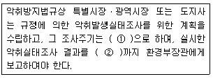
- ① 분기 1회 이상, ② 12월 31일
- ① 분기 1회 이상, ② 다음해 1월 15일
- ① 반기 1회 이상, ② 12월 31일
- ① 반기 1회 이상, ② 다음해 1월 15일
(정답률: 알수없음)
65. 대기환경보전법령상 배출시설 설치허가를 받고자 하는 자가 배출시설 설치허가신청시 첨부하여야 하는 서류로 가장 거리가 먼 것은?
- 오염물질 등의 배출량을 예측한 명세서
- 배출시설의 연간 유지관리계획서
- 배출시설의 설치명세서
- 방지시설의 일반도
(정답률: 알수없음)
66. 대기환경보전법령상 대기오염경보에 관한 내용 중 옳지 않은 것은?
- 대기오염 경보대상 오염물질 농도에 따라 주의보ㆍ경보 또는 중대경보로 구분한다.
- 대기오염 경보단계별 오염물질의 농도기준은 환경부령으로 정한다.
- 대기오염 경보대상 오염물질은 환경정책기본법에 따라 환경기준 ltjfwjd된 오염물질 중 오존을 말한다.
- 대상지역은 환경부장관이 필요하다고 인정하여 지정한 지역에 한한다.
(정답률: 알수없음)
67. 환경정책기본봅령상 이산화질소의 대기환경기준으로 옳은 것은? (단, 1시간 평균치 기준)
- 0.15ppm 이하
- 0.10ppm 이하
- 0.06ppm 이하
- 0.⑤ppm 이하
(정답률: 알수없음)
68. 대기환경보전법규상 사업자가 배출시설 및 방지시설 운영기록부에 기록하여야 하는 사항으로 가장 거리가 먼 것은?
- 시설의 가동시간
- 대기오염물질 배출량
- 시설관리 및 운영자
- 배출시설 및 방지시설의 형식
(정답률: 알수없음)
69. 대기환경보전법령상 초과부과금 산정기준에 따른 오염물질 1킬로그램당 부과금액으로 틀린 것은?
- 염소 - 7400원
- 암모니아 - 1400원
- 염화수소 - 7400원
- 불소화합물 - 7400원
(정답률: 알수없음)
70. 대기환경보전법규상 대기환경규제지역을 관할하는 시ㆍ도지사가 그 지역의 환경기준 달성ㆍ유지를 위해 수립하는 실천계획에 포함되어야 할 사항과 가장 거리가 먼 것은?
- 계획달성연도의 대기질 예측 결과
- 일반 환경 현황
- 배출시설에 대한 경제성 평가
- 대기오염원별 대기오염물질 저감계획 및 계획의 시행을 위한 수단
(정답률: 알수없음)
71. 대기환경보전법령상 부과금 징수유예ㆍ분할납부 기준에 관한 사항이다. ( )안에 알맞은 것은?
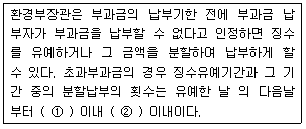
- ① 1년, ② 6회
- ① 1년, ② 12회
- ① 2년, ② 6회
- ① 2년, ② 12회
(정답률: 알수없음)
72. 다음은 대기환경보전법규상 비산먼지의 발생을 억제하기 위한 시설의 설치 및 필요한 조치기준에 관한 사항이다. ( )안에 알맞은 것은?
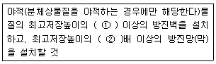
- ① 1/4, ② 1.25
- ① 1/3, ② 1.25
- ① 1/2, ② 1.2
- ① 1/4, ② 1.2
(정답률: 알수없음)
73. 다음은 대기환경보전법규상 환경기술인의 교육에 관한 설명이다. ( )안에 알맞은 것은?
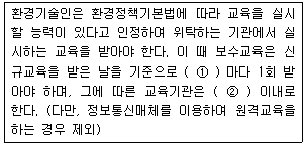
- ① 1년, ② 5일
- ① 1년, ② 7일
- ① 3년, ② 5일
- ① 3년, ② 7일
(정답률: 알수없음)
74. 대기환경보전법규상 휘발성유기화합물 배출시설의 변경신고를 하여야 하는 경우에 해당되지 않는 것은?
- 사업장 소속 환경기술인이 변경된 경우
- 사업장의 명칭 또는 대표자를 변경하는 경우
- 설치신고를 한 배출시설 규모의 합계보다 100분의 50이상 증설하는 경우
- 휘발성유기화합물 배출억제ㆍ방지시설을 임대하는 경우
(정답률: 알수없음)
75. 대기환경보전법상 공동주택의 냉난방시설을 설치ㆍ운영하는 사업자에 대해 조업정지를 명하여야 하는 경우지만, 그 조업정지가 공익에 현저한 지장을 줄 우려가 있다고 인정되는 경우로서 환경부장관이 조업정지처분에 갈음하여 부과할 수 있는 과징금 처분기준은?
- 5천만원 이하
- 1억원 이하
- 2억원 이하
- 3억원 이하
(정답률: 알수없음)
76. 대기환경보전법규상 위임업무의 보고사항 중 '배출부과금부과 징수실적 및 체납처분현황'의 보고기일 기준으로 옳은 것은?
- 다음 달 10일 까지
- 매분기 종료 후 15일 이내
- 매반기 종료 후 15일 이내
- 다음 해 1월 15일 까지
(정답률: 알수없음)
77. 다중이용시설 등의 실내공기질관리법규상 신축 공동주택의 실내공기질 권고기준으로 틀린 것은?
- 벤젠: 30㎍/m3 이하
- 톨루엔: 1000㎍/m3 이하
- 자일렌: 700㎍/m3 이하
- 에틸벤젠: 300㎍/m3 이하
(정답률: 알수없음)
78. 대기환경보전법상 5년 이하의 징역이나 3천만원 이하의 벌금에 처하는 기준은?
- 연료사용 제한조치 등의 명령을 위반한 자
- 조업정지명령을 위반한 자
- 배출시설의 폐쇄에 관한 명령을 위반한 자.
- 첨가제를 제조기준에 맞지 않게 제조한 자
(정답률: 알수없음)
79. 대기한경보전법령상 Ⅲ지역의 기본부과금의 지역별 부과계수는? (단, Ⅲ지역은 국토의 계획 및 이용에 관한 법률상 자연환경보전지역 기준)
- 2.0
- 1.5
- 1.0
- 0.5
(정답률: 알수없음)
80. 대기환경보전법규상 특정대기유해물질에 해당되는 것은?
- 브롬 및 그 화합물
- 아연 및 그 화합물
- 니켈 및 그 화합물
- 구리 및 그 화합물
(정답률: 알수없음)